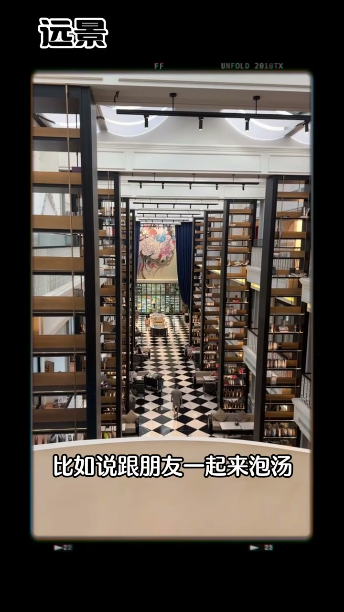
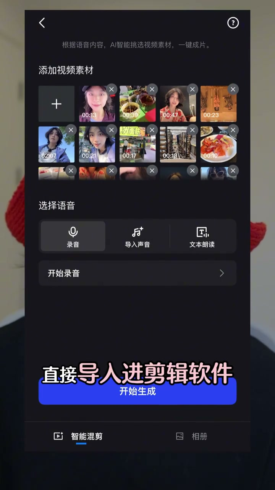
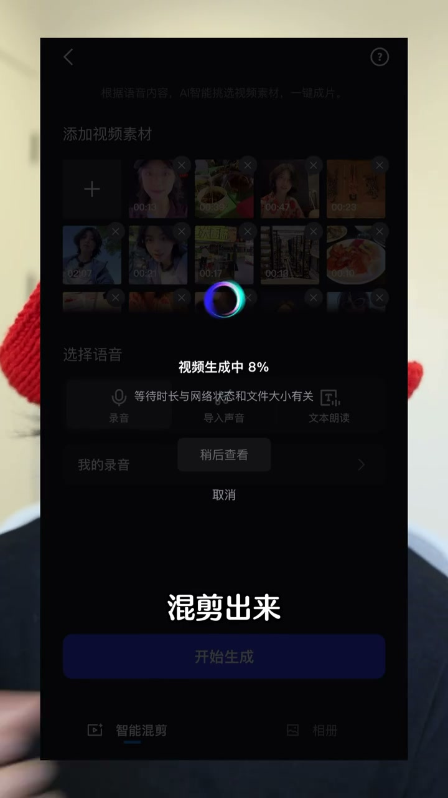

内容要点
[00:00] 放下出来玩 手机里面塞了一堆的素材 想减
[00:02] 但就是不知道该如何下手
[00:04] 这期视频我带你把零碎的素材快速组装成一个
[00:07] 高质量又流量的旅行vlog
[00:09] 不仅发朋友圈很有面子
[00:11] 搭小红书一言能成为报款
[00:13] 就是我同家的方法
[00:14] 赶紧揣兜里千万别弄丢了
[00:16] 先说拍摄 你要知道旅行是由多个单独事件组成的
[00:20] 比如我们朋友去吃当地的夜市小吃
[00:22] 或者打卡某某景点或者一起去泡汤
[00:25] 在进行每一个事件的时候
[00:27] 你都可以按照我给你的1加3的模板去积累素材
[00:31] 什么叫做1加3呢
[00:32] 1就是首先你要拍一个对着镜头说话的画面
[00:35] 比如说我今天跟朋友们约了一只泡汤的活动
[00:40] 3是一起在vlog灭万能的敘事镜头
[00:42] 它基本上是由三类镜头组成的
[00:45] 分别是园景 动作和容状态
[00:47] 比如说跟朋友一起来泡汤
[00:49] 那我就可以拍一个来泡汤的环境里面的一个园景
[00:52] 然后再拍一些手拿食物的动作
[00:55] 再拍一些我跟朋友说话
[00:57] 或者是我的一些有面部表情的情绪状态
[00:59] 那比如到夜市的环境里面
[01:01] 首先我可以拍一个夜市的园景
[01:03] 然后我再拍一些拿食物或者吃食物的动作型的画面
[01:07] 再拍一些我在这个场景里面的一些情绪
[01:10] 然后这个画面里的人当然也可以是说话的
[01:12] 这个vlog里面觉得非常好用
[01:14] 当你旅行当中进入一个新的场景
[01:16] 一个新的事件的时候
[01:17] 都可以按照我给你说的1加3的模板去积累你的拍摄素材
[01:22] 然后你可以记住一个数字
[01:23] 1分钟的视频
[01:24] 如果你希望拍的画面丰富一点的
[01:26] 大概需要25到30个镜头
[01:27] 你心里面有数就行了
[01:29] 那当你素材积累的差不多了
[01:30] 咱们就可以进入后期险阶了
[01:32] 我们可以把这些已经拍好的素材直接导入清险阶软件
[01:36] 那这个页面跳出来就会让你去选择配音的方式
[01:39] 如果你非常着急
[01:40] 最快的就是把脚本直接导入进去
[01:43] 那我已经用这个软件克隆了一个我自己的声音
[01:46] 你听一下
[01:46] 这个国庆假期我打算不出北京
[01:49] 找了几个在北京的好朋友一起沉浸市聚会
[01:53] 是不是还是非常相似的是吧
[01:54] 你可以让他直接用你克隆的声音
[01:56] 然后给你配音就OK了
[01:58] 那如果你觉得我想自己读出来更加自然
[02:00] 也是可以的
[02:01] 你可以直接点击这个录音
[02:03] 你看这个就是我录音的感受
[02:04] 大家比较一下
[02:06] 这个国庆假期我不打算出北京
[02:08] 找了几个在北京的好朋友一起沉浸市聚会
[02:12] 当你把配音搞进去之后
[02:13] 你点击这个混减
[02:14] 他就很快能给你混减出来
[02:16] 来看一下他减的这个效果
[02:18] 这个国庆假期我不打算出北京
[02:20] 找了几个在北京的好朋友一起沉浸市聚会
[02:23] 不用赶高铁
[02:24] 不用激进区
[02:26] 这种不用出眼门
[02:27] 去把城市玩出新鞋样的感觉
[02:29] 才是我们今年国庆最期待的打开方式
[02:33] 是不是还是非常不错的
[02:34] 那因为我告诉你
[02:35] 这个方法真的是可以非常快速地
[02:37] 制作出你的旅行blog
[02:38] 并且立即上传
[02:39] 如果你希望你的blog制作得更大惊良
[02:41] 你还可以去我的主页
[02:42] 看这个实习万人看过的万能blog公事
[02:45] 我讲非常非常详细
[02:46] 如果你这新粉的话
[02:47] 我还出了很多关于脚本的干货
[02:49] 可以去主页播过课
[02:50] 然后点击关注


